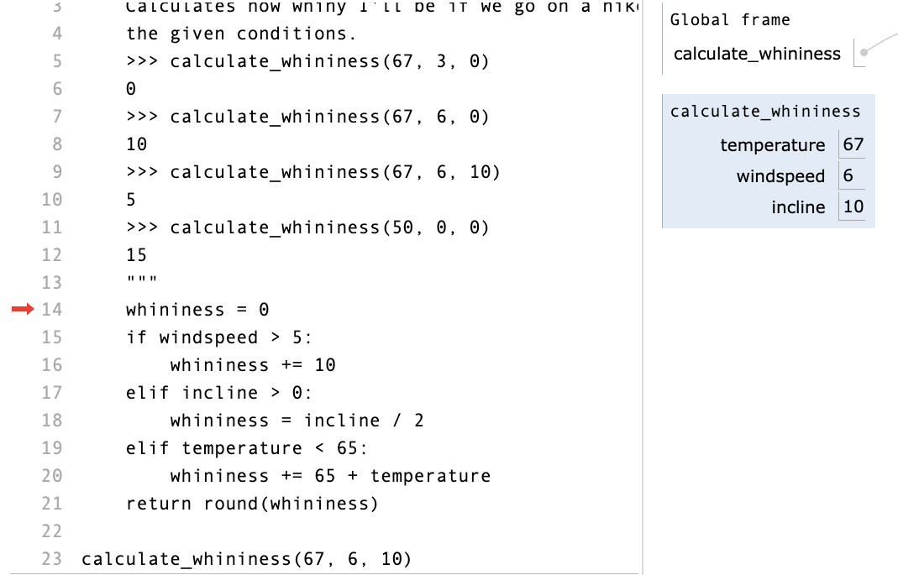

These are common to all programming languages:
Each programming language has syntactic rules. If the rules aren't followed, the program cannot be parsed and will not be executed at all.
Spot the syntax errors:
def add(num1, num2) # Missing colon
return num1 + num2
name = 'bruno'
name + = 'no' # No space needed between + and =
To fix a syntax error, read the message carefully and go through your code with a critical eye. üëÅ
SyntaxErrorWhat it technically means:
The file you ran isn’t valid python syntax
What it practically means:
You made a typo
What you should look for:
Examples:
print("just testing here"))
title = 'Hello, ' + name ', how are you?'
IndentationError/TabErrorWhat it technically means:
The file you ran isn't valid Python syntax, due to indentation inconsistency.
What it sometimes means:
You used the wrong text editor (or one with different settings)
What you should look for:
cat -A filename.py will show them
Example:
def sum(a, b):
total = a + b
return total
A runtime error happens while a program is running, often halting the execution of the program. Each programming language defines its own runtime errors.
Spot the runtime error:
def div_numbers(dividend, divisor):
return dividend/divisor
quot1 = div_numbers(10, 2)
quot2 = div_numbers(10, 1)
quot3 = div_numbers(10, 0) # Cannot divide by 0!
quot4 = div_numbers(10, -1)
To prevent runtime errors, code defensively and write tests for all edge cases.
When there's a runtime error in your code, you'll see a traceback in the console.
def div_numbers(dividend, divisor):
return dividend/divisor
quot1 = div_numbers(10, 2)
quot2 = div_numbers(10, 1)
quot3 = div_numbers(10, 0)
quot4 = div_numbers(10, -1)
Traceback (most recent call last):
File "main.py", line 14, in <module>
quot3 = div_numbers(10, 0)
File "main.py", line 10, in div_numbers
return dividend/divisor
ZeroDivisionError: division by zero
The most recent line of code is always last (right before the error message).
Traceback (most recent call last):
File "main.py", line 14, in <module>
quot3 = div_numbers(10, 0)
File "main.py", line 10, in div_numbers
return dividend/divisor
ZeroDivisionError: division by zero
Traceback (most recent call last):
File "main.py", line 14, in <module>
quot3 = div_numbers(10, 0)
File "main.py", line 10, in div_numbers
return dividend/divisor
ZeroDivisionError: division by zero
Now that we know how to read a traceback, let's look at a few common runtime errors.
TypeError:'X' object is not callableWhat it technically means:
Objects of type X cannot be treated as functions
What it practically means:
You accidentally called a non-function as if it were a function
What you should look for:
Example:
sum = 2 + 2
sum(3, 5)
...NoneType...What it technically means:
You used None in some operation it wasn't meant for
What it practically means:
You forgot a return statement in a function
What you should look for:
Example:
def sum(a, b):
print(a + b)
total = sum( sum(30, 45), sum(10, 15) )
NameErrorWhat it technically means:
Python looked up a name but couldn't find it
What it practically means:
What you should look for:
Example:
fav_nut = 'pistachio'
best_chip = 'chocolate'
trail_mix = Fav_Nut + best__chip
A program has a logic error if it does not behave as expected. Typically discovered via failing tests or bug reports from users.
Spot the logic error:
def calculate_lifetime_supply(current_age, amount_per_day):
""" Returns the amount of items consumed over a lifetime
(with a max age of 100 assumed) based on the current age
and the amount consumed per day.
>>> calculate_lifetime_supply(99, 1)
365
>>> calculate_lifetime_supply(99, 2)
730
"""
return amount_per_day * (100 - current_age)
To avoid the wrath of angry users, write tests.
These tools are particularly helpful for debugging logical bugs.
Let's start with this buggy code:
def suggest_supplies(temperature, windspeed, incline):
"""
>>> suggest_supplies(33, 3, 0)
''
>>> suggest_supplies(33, 3, 5)
'stick '
>>> suggest_supplies(33, 6, 0)
'windbreaker '
>>> suggest_supplies(17, 0, 0)
'thermal '
>>> suggest_supplies(33, 6, 10)
'windbreaker stick '
>>> suggest_supplies(17, 0, 10)
'stick thermal '
"""
supplies = ''
if windspeed > 5:
supplies += 'windbreaker '
elif incline > 0:
supplies = 'stick '
elif temperature < 32:
supplies += 'thermal '
return supplies
A strategy that can be used across programming languages
is to put print() statements in your code.
Two goals:
...
elif incline > 0:
print("here! incline > 0")
supplies = 'stick '
print("supplies", supplies)
...
A tool designed especially for understanding the execution of Python code.
Set breakpoints in an IDE and step line-by-line through the code that follows.
For VS Code, install the Python extension first.